Blocagem no Unity
Montagem das fases direto na engine: colisores, animações, layout de cada nível e a jogabilidade estruturada de forma visual.

Um só não chega ao fim
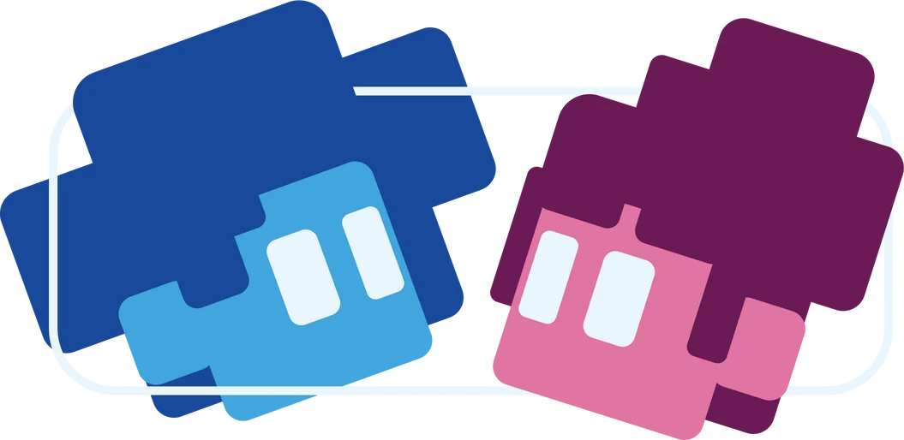
Um jogo cooperativo 2D em pixel art sobre as bolhas dos algoritmos: dois personagens, cada um preso na própria bolha, que só chegam ao fim juntos.
Fiquei com a estrutura e a programação do jogo: a montagem das fases no Unity e o código em C#.
Como falar de bolhas de filtro com quem vive dentro delas?
A pesquisa partiu das filter bubbles: os algoritmos de TikTok, Instagram e YouTube que mostram à Geração Z sempre mais do mesmo, reforçando crenças e encurtando o diálogo. Um texto explicaria o problema; um jogo faria a pessoa sentir.
Transformamos o tema em mecânica: cada jogador controla um personagem preso na sua bolha, e só cooperando, saindo da própria zona de conforto, a dupla avança. A referência foi o clássico de plataforma em dupla Fireboy & Watergirl.
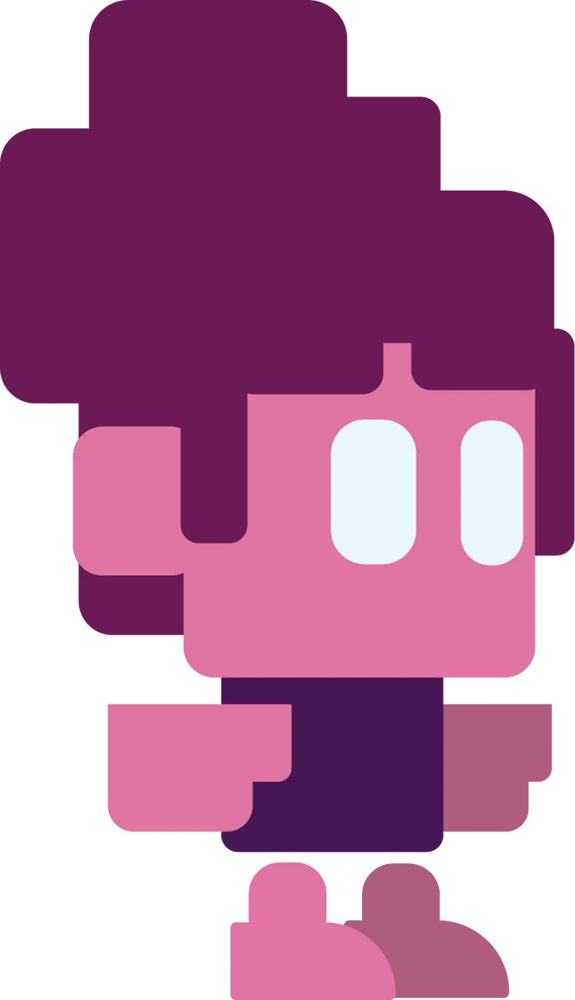
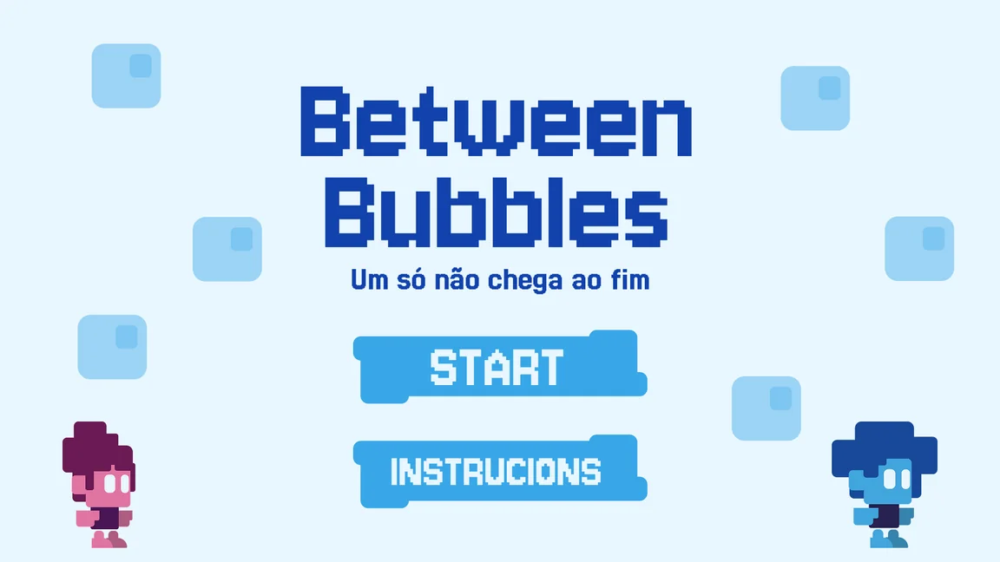
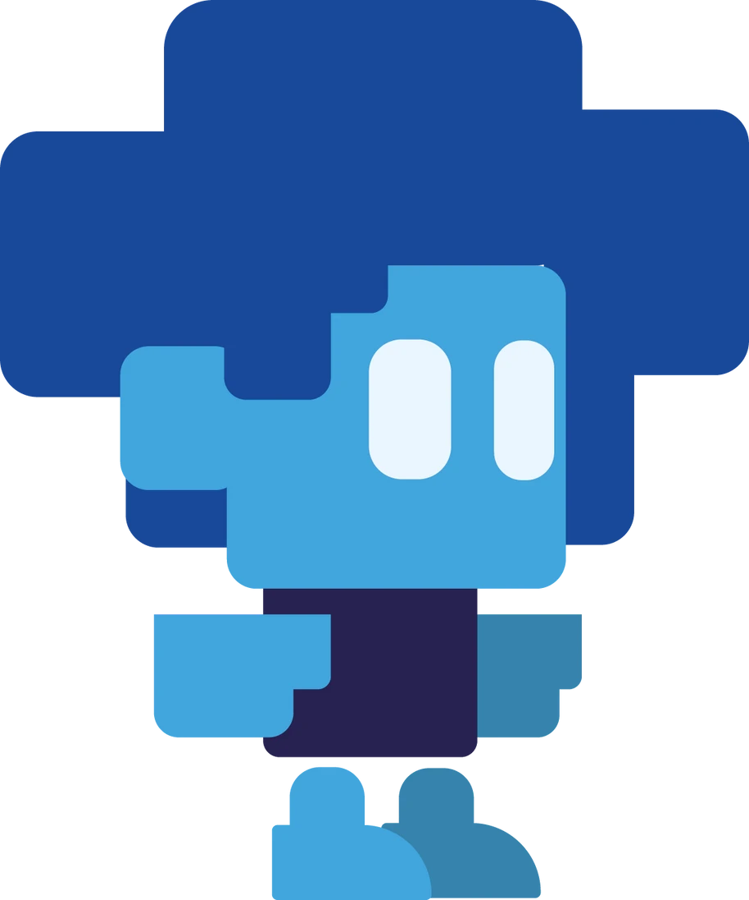
Personagens e mapas em baixa resolução proposital, azuis, roxos e lilás para a atmosfera de "bolha", e verde e amarelo para destacar inimigos e itens de interação.
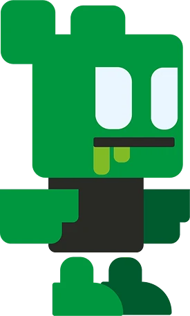
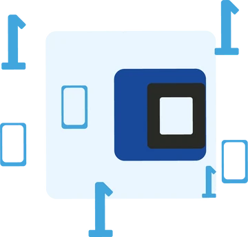
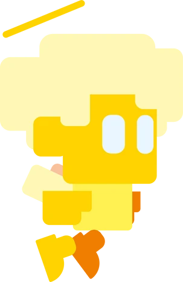
O jogo foi construído em duas etapas, e a programação foi a parte que mais me empolgou.
Montagem das fases direto na engine: colisores, animações, layout de cada nível e a jogabilidade estruturada de forma visual.
Lógica do jogo no Visual Studio Code. Os maiores desafios foram a transição entre telas e a animação de pulo, resolvidos com pesquisa, estudo e apoio de IA.
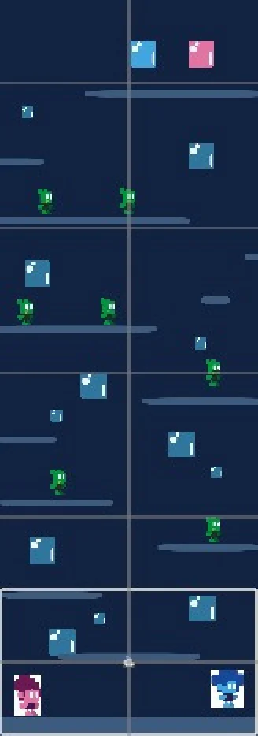
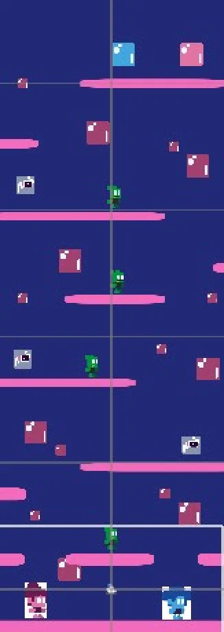
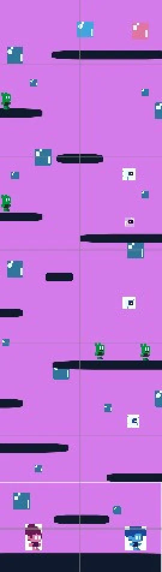
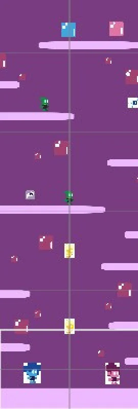
Na exposição do Projeto Integrador, o jogo rodou projetado na parede, e quem passava sentava para jogar em dupla. O resultado: um jogo funcional, coerente e acima do que imaginávamos no começo.
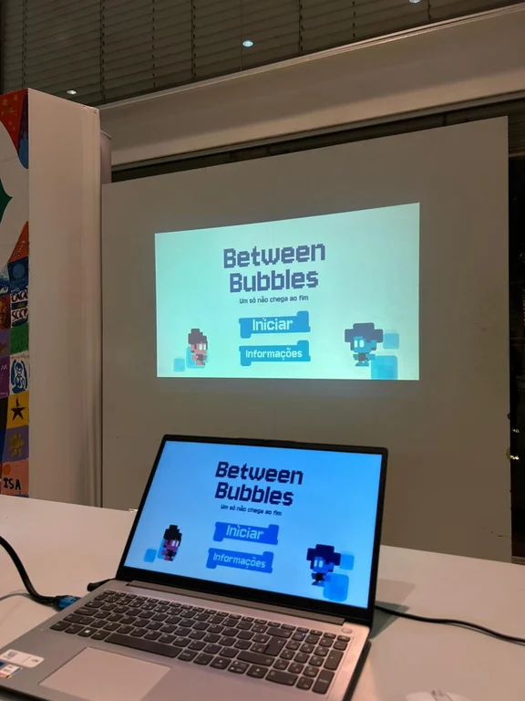
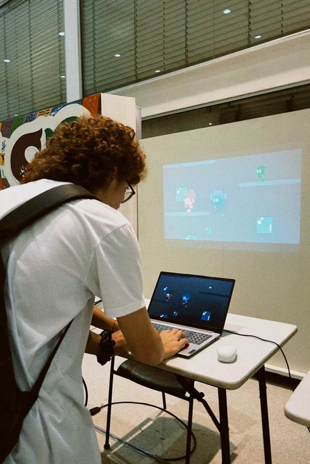
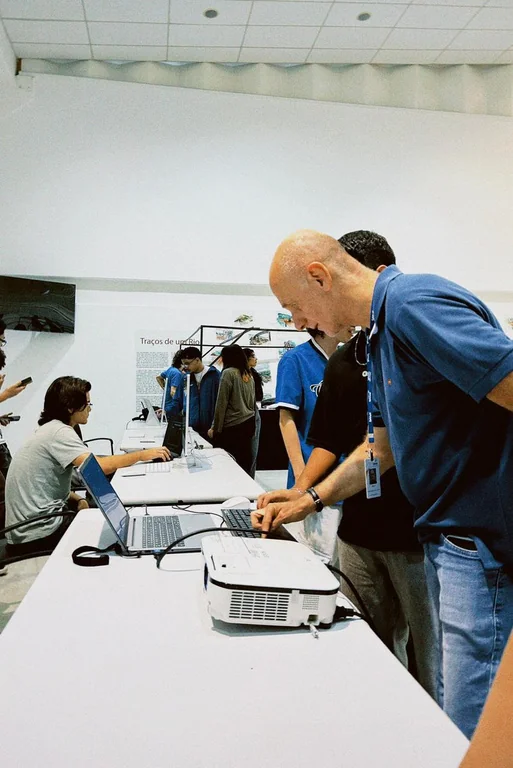
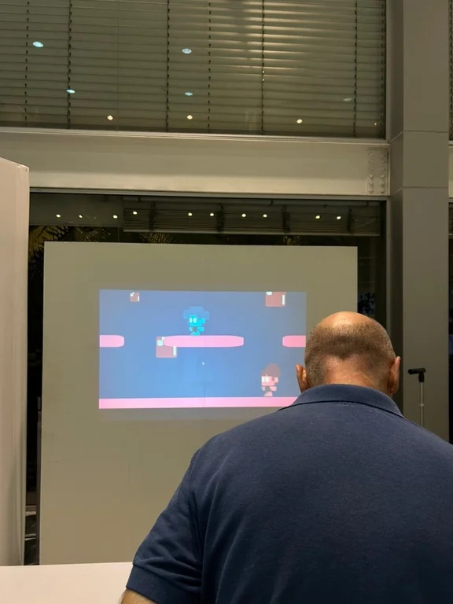
Projeto Integrador · Produção Multimídia · Senac São Paulo